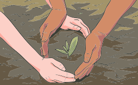

A Etnofarmacologia é considerada uma área de estudo complementar e inter-relacionada à da Etnobotânica. De acordo com Elisabetsky (2003), a Etnofarmacologia consiste em combinar informações adquiridas junto a usuários da flora medicinal (comunidades e especialistas tradicionais), com estudos químicos e farmacológicos.
Por exemplo, se os entrevistados relatam que folhas da planta Z (preparadas e usadas de determinadas formas) curam determinado problema de saúde, o método etnofarmacológico permite a formulação de hipóteses a respeito da utilidade da planta Z para tal indicação.
Essa é a hipótese que os pesquisadores levarão para o laboratório para avaliação, de acordo com métodos e técnicas em fitoquímica e farmacologia, a fim de desenvolver os medicamentos.